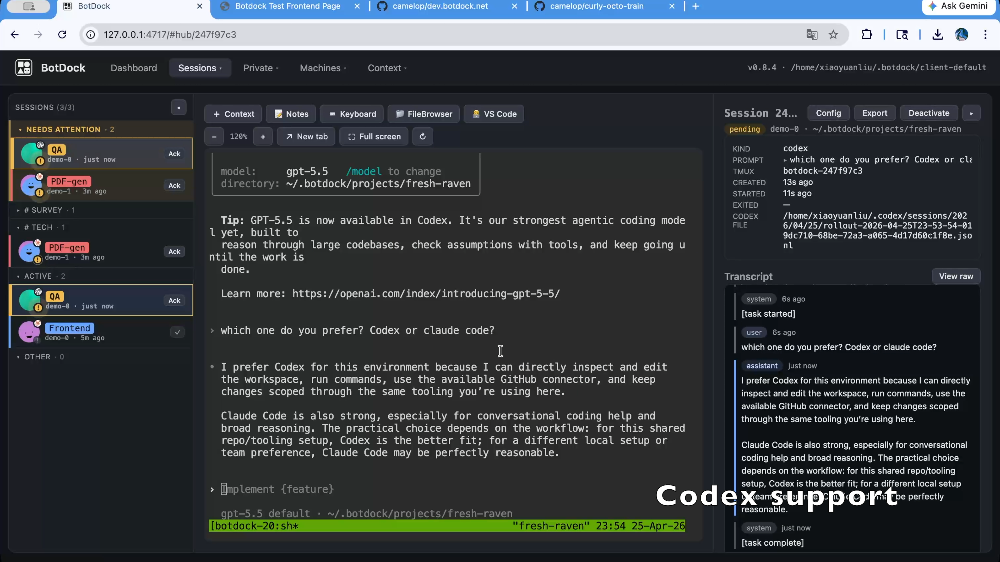
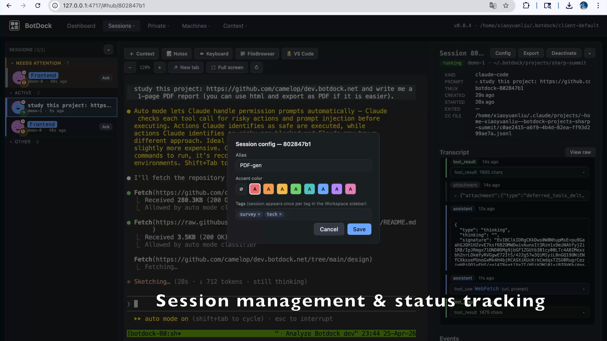
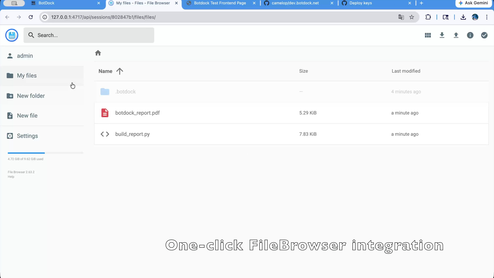
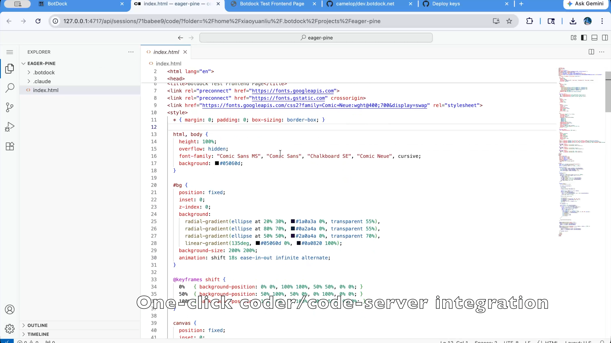
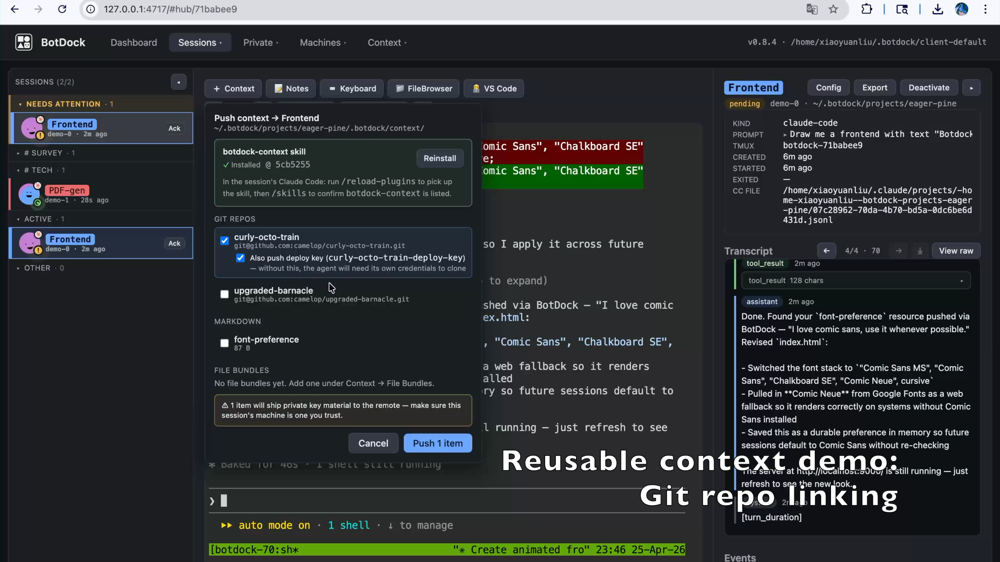

Track and interact with all your claude-code / codex agent sessions in one page.
↑ One-page workspace for every claude-code / codex session you run.
One-line installer for macOS / Linux. Re-run the same command to upgrade.
curl -fsSL https://raw.githubusercontent.com/camelop/dev.botdock.net/main/install.sh | bash
⚠ BotDock is an early-stage prototype for research / personal use only. Do not run it in production environments or expose it to untrusted networks.
3 steps to your own agent dashboard — in about a minute.
Run the installer above, then start the daemon with
botdock start — it spins up a background server at
~/.botdock/client-default and opens the UI in your browser.
Prefer to keep state in a specific directory? Use botdock serve from inside it.
Generate an SSH key, register a target machine (with optional jump-host chain and credentials), and run the built-in connection test until it goes green.
Spawn claude-code or codex sessions on any registered machine and drive them from one workspace — transcript, terminal, file browser, and notes side by side.
~/.botdock/client-default by default) wholesale.
A single page that follows every session you run on every machine.
Spin up agent sessions on any registered machine and watch them all from a single three-column workspace — sidebar, terminal, transcript — without juggling tmux panes or SSH terminals.
See in action
Every session carries a status pill (running / pending / syncing / exited), optional alias and accent color, and free-form tags. The dashboard surfaces what needs your attention first and tucks the rest away.
See in action
Spawn a per-session filebrowser or VS Code server, scoped to the session's workdir, with one click. Both run on the remote machine and reverse-proxy through BotDock so you stay in one tab.
File browser VS Code

Curate reusable context centrally — markdown snippets, git repos with deploy keys, arbitrary file bundles — and push it into any session's workdir on demand. Personal coding preferences and project repos travel with you.
Personal preferences Repo linking
BotDock is built around the features its users actually want. Got an idea, a pain point, or a session pattern we should support? Open a feature request — the next release probably picks from the issue queue.
Open a feature request →